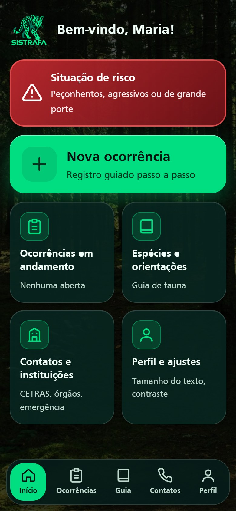
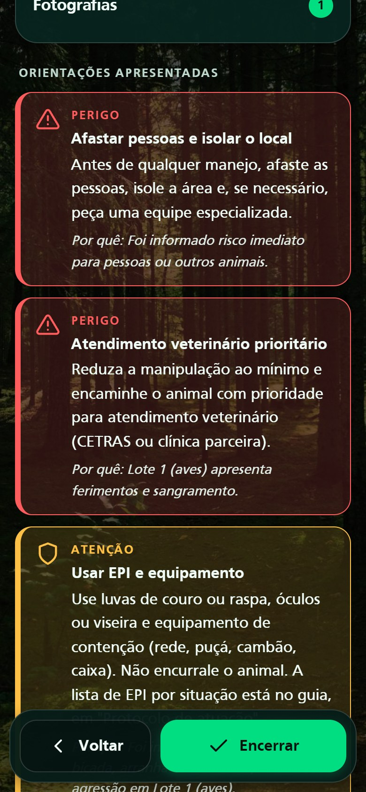

Funcionamento do aplicativo e perguntas frequentes de veterinária e de computação
O SISTRAFA apoia policiais e bombeiros no atendimento de ocorrências com animais silvestres: resgates em residências e vias, animais feridos ou atropelados, apreensões em fiscalização e entregas voluntárias. Nessas situações, o agente costuma lidar com espécies que não conhece, sem apoio técnico no local e, muitas vezes, sem sinal de internet.
O aplicativo resolve três problemas ao mesmo tempo:
Princípios do projeto. Funciona sem internet depois da instalação; os dados ficam somente no aparelho (não há servidor nem conta on-line); é uma ferramenta de apoio e não substitui boletins de ocorrência, documentos oficiais, protocolos da instituição nem a avaliação de profissionais especializados.
Ao tocar em Nova ocorrência, o app cria um registro com número no formato SIS-AAAAMMDD-NNN e grava automaticamente data, hora, responsável (do perfil) e, se autorizado, a localização. A ocorrência é dividida em oito etapas, mostradas numa barra de progresso. Tudo é salvo no aparelho a cada alteração; é possível sair e voltar depois do ponto em que parou.
| Etapa | O que o agente faz |
|---|---|
| 1 Abertura | Registra a localização (GPS), o endereço ou ponto de referência, o tipo de ambiente e o motivo do atendimento. |
| 2 Avaliação de risco | Responde até 7 perguntas, uma por vez (Sim / Não / Não sei ou opções): risco imediato, vivo ou morto, peçonhento, risco de mordida ou coice, grande porte, animal em via e, só se houver risco, se a equipe consegue manejar com segurança. Cada resposta de risco mostra na hora a orientação correspondente. |
| 3 Contexto | Até 9 perguntas: quantidade aproximada, como o animal foi encontrado, condições em que é mantido (aparece só se estiver contido, preso, em cativeiro ou em transporte), filhotes, feridos, suspeita de crime, tipo de crime (só se houver suspeita), objetos relacionados e necessidade de atendimento veterinário urgente. |
| 4 Fotos do local | Fotografias do local antes de qualquer intervenção, fotos de vestígios (se houver suspeita de crime), o checklist de registro da ocorrência e o checklist fotográfico (13 tipos de foto recomendados). |
| 5 Animais e lotes | Cadastro de animais individuais ou de lotes (ex.: 30 aves apreendidas numa única ficha), com grupo, espécies e quantidades, estado, situação, condição, comportamento, riscos, indivíduos que precisam de atenção e fotos. |
| 6 Manejo | Orientações de segurança, orientações de contenção por grupo, lista de EPI e quatro blocos do checklist operacional (avaliação inicial, segurança da equipe, manejo e contenção, transporte), além da forma de acondicionamento. |
| 7 Encaminhamento | Recomendações de destino, escolha da instituição (ordenadas pelos grupos que atendem e pela distância), dados da entrega, verificações dos animais durante o transporte e o checklist de destinação. |
| 8 Revisão | Lista do que ficou pendente, resumo de cada etapa com botão "Alterar", todas as orientações apresentadas e o histórico de alterações. Ao encerrar, o relatório fica disponível. |


Além da orientação que aparece em cada pergunta, um conjunto de 22 regras combina as respostas com os animais cadastrados e monta a lista de orientações da ocorrência, ordenada por gravidade (perigo, atenção, informação). Exemplos: animal peçonhento ou "não sei" leva à conduta para peçonhentos e ao transporte em caixa rígida identificada; suspeita de crime, apreensão ou cativeiro leva a "não realizar soltura imediata"; fezes acumuladas, animal morto ou risco de zoonose levam à proteção contra risco biológico; uma verificação de transporte com prostração ou hipertermia gera alerta de piora. Cada orientação mostra o motivo, por exemplo: "Por quê: Lote 1 (aves) apresenta ferimentos e sangramento". Se uma resposta é alterada e uma pergunta deixa de aparecer, a resposta antiga deixa de valer.
Cada foto (câmera ou galeria) recebe identificação (animal, lote, gaiola), momento da ocorrência, observação, data, hora, autor, número da ocorrência e localização. O app lê os metadados da câmera (Exif: data original, modelo, coordenadas) e calcula o código SHA-256 do arquivo original, que vai para o relatório. O recorte gera uma cópia e o original não é alterado; a exclusão pede um motivo e a foto continua no histórico e no relatório como excluída.
O PDF é gerado no próprio celular, sem internet, e tem onze partes: identificação; local e contexto; respostas de risco; respostas de contexto; animais e lotes; orientações apresentadas (com motivo); manejo e checklist; encaminhamento e verificações no transporte; fotografias com metadados e SHA-256; observações e itens não informados; histórico de registros; e campos de assinatura. O agente decide se baixa, compartilha ou imprime.
1. De onde vêm as orientações de manejo do aplicativo?
De três fontes: o protocolo operacional para atuação policial em apreensões de fauna vitimada (Dallabrida et al., UNICENTRO e Polícia Militar do Paraná, 2026), os guias do Ministério da Saúde (animais peçonhentos, 2024; epizootias em primatas, 2014) e o manual da Funasa sobre acidentes com peçonhentos (2001). Algumas condutas vieram das respostas do questionário de requisitos do projeto. A legislação de destinação é a Lei nº 9.605/1998, o Decreto nº 6.514/2008 e a IN Ibama nº 5/2021.
2. O conteúdo foi revisado por um médico-veterinário?
O conteúdo de manejo foi organizado com a participação da Me. Vanessa Eloisa Dallabrida, do CETRAS/UNICENTRO, e segue o protocolo elaborado com a coorientação. A revisão completa, ficha por ficha e regra por regra, com a equipe do CETRAS é uma etapa prevista e ainda não concluída; ela é citada como limitação no artigo do estágio.
3. Por que, na dúvida, o app trata o animal como peçonhento?
Porque o erro oposto é o perigoso. Se o agente responde "Não sei" à pergunta sobre peçonha, o app aplica a mesma conduta do animal peçonhento: distância, sem uso das mãos, contenção só por pessoa capacitada e caixa rígida identificada. O guia também orienta tratar toda coral como verdadeira, como recomenda o Ministério da Saúde.
4. Como o app orienta a contenção de aves?
Rede de malha macia ou pano, asas firmes junto ao corpo, sem comprimir o tórax (as aves dependem do movimento do tórax para respirar), cobrir a cabeça para reduzir estímulos, controlar primeiro as garras das rapinas, óculos ou viseira para aves de bico longo e transporte em caixa escura e ventilada, com espaço limitado para evitar fraturas por batida de asa.
5. E para anfíbios?
Luvas sem pó e molhadas, puçá de malha fina, recipiente plástico com tampa ventilada e umidade (água do local, musgo ou papel-toalha molhado), local escuro e fresco. Se o agente informar acondicionamento em saco de pano e houver anfíbios, o app avisa para trocar, porque o pano desidrata o animal.
6. Como são transportadas as serpentes peçonhentas?
Em caixa rígida (madeira ou plástico resistente), vedada, trancada e identificada como "animal perigoso", que só deve ser aberta em local seguro, por pessoal especializado. O manejo é só com gancho ou pinção, por pessoa capacitada.
7. Quando o aplicativo sugere a soltura do animal?
Só quando todos os animais foram informados como aparentemente saudáveis, foram encontrados livres, não há suspeita de crime, não é apreensão nem cativeiro, a espécie é nativa e identificada. Mesmo assim a orientação é "avaliar soltura no local, conforme o protocolo da instituição; na dúvida, encaminhar para avaliação técnica". Se o agente escolher soltura num caso de apreensão, cativeiro ou crime, o app exibe um aviso e marca como pendência a falta de justificativa.
8. E as espécies exóticas, como o sagui-de-tufo-preto?
O sagui é exótico invasor no Paraná. Quando é cadastrado, o app orienta não soltar e encaminhar ao CETRAS ou ao órgão ambiental, além de alertar sobre o risco de zoonose.
9. Como o app trata o risco de raiva e outras zoonoses?
Morcegos e saguis cadastrados, ou risco de zoonose marcado no lote, geram a orientação de não tocar sem luvas e, em caso de mordida ou arranhadura, lavar com água e sabão e procurar atendimento. O app lembra que a vacinação da equipe deve estar em dia (raiva, tétano e febre amarela). Com fezes acumuladas, amônia ou animal morto, recomenda luvas de nitrilo e máscara P2.
10. E se for encontrado um primata morto?
Se houver bugio cadastrado e animal morto na ocorrência, o app orienta notificar a vigilância em saúde do município, pois a morte de primatas é evento sentinela da febre amarela. A pergunta "vivo ou morto" também lembra essa notificação.
11. Como o agente sabe que um animal precisa de atendimento com prioridade?
A orientação "Atendimento veterinário prioritário" aparece quando há necessidade urgente informada, animal ferido, com sangramento, dificuldade para respirar ou se locomover, debilitado, inconsciente, com comportamento anormal ou apático. Sangramento, inconsciência e dificuldade respiratória elevam o nível para "perigo".
12. O app avalia o bem-estar dos animais apreendidos?
Em parte. A etapa de contexto pergunta sobre superlotação, ventilação, exposição ao sol, sujeira e amônia, falta de água ou alimento e falta de abrigo, e o cadastro registra o comportamento (alerta, apatia, medo intenso, agressividade, movimentos repetitivos). Com problemas nas condições, o app orienta fotografar antes de alterar e depois melhorar as condições, sem soltar. Não há escore de bem-estar nem avaliação clínica: o registro é do que o agente observa à distância.
13. Como funciona o registro de muitos animais, como numa apreensão de aves?
Um lote reúne vários animais do mesmo grupo, com espécies e quantidades, sem uma ficha por animal. Só os indivíduos que exigem atenção (feridos, filhotes, anilhados) são destacados com observação. O app compara o total cadastrado com a estimativa inicial e avisa se forem diferentes.
14. E se o agente não souber a espécie?
Há a opção "Espécie não identificada" e toda identificação fica marcada como provisória até o agente confirmar. O app orienta a conduta mais cautelosa para o grupo, fotos de vários ângulos e consulta a especialista. As fotos de referência do guia e da região ajudam na comparação, sem confirmar a espécie automaticamente.
15. O que o app orienta durante o transporte?
Separar por espécie, porte e condição clínica (predadores longe de presas, debilitados e filhotes à parte), não superlotar, fixar as caixas no veículo, evitar sol e correntes de ar e verificar os animais no trajeto. Cada verificação fica registrada com hora e sinais (estável, agitação, prostração, dificuldade respiratória, hipertermia, óbito); sinais de piora geram alerta para avisar o destino e priorizar o atendimento.
16. O app orienta oferecer água ou alimento?
Não. A orientação é não oferecer água ou alimento sem orientação técnica, e filhotes devem ser mantidos aquecidos, em local escuro e silencioso.
17. As fotos servem como prova ou laudo?
Não substituem a perícia nem a cadeia de custódia formal. O app preserva o arquivo original, registra data, hora, autor e localização, guarda os metadados da câmera e calcula o código SHA-256, que permite verificar depois se a imagem foi alterada. O checklist fotográfico orienta o que fotografar (cenário, recintos, condições, lesões, anilhas, vestígios) sem manipular o animal só para a foto.
18. Que equipamentos de proteção o app recomenda?
Luvas de couro ou raspa (mordida, bicada, arranhadura), luvas de nitrilo descartáveis (risco biológico), botas de cano alto ou perneiras (áreas com serpentes), óculos ou viseira (secreções e aves de bico longo) e máscara P2 (poeira orgânica, fezes acumuladas, amônia), além de EPI que não atrapalhem o uso de ganchos e pinções.
19. Como o app ajuda a escolher a instituição de destino?
Lista as instituições cadastradas ordenadas pelos grupos animais que recebem e, se houver localização, pela distância, com indicação de atendimento 24 horas. O CETRAS/UNICENTRO vem cadastrado; o agente pode incluir os centros e clínicas da sua região. O checklist de destinação lembra de avisar a instituição antes do transporte.
20. O app substitui o atendimento do CETRAS ou do veterinário?
Não. Ele organiza a primeira resposta do agente em campo e o registro da ocorrência. As decisões clínicas, a reabilitação e a destinação final continuam com o CETRAS, o médico-veterinário e o órgão ambiental. Essa ressalva aparece no app e no rodapé de cada página do relatório.
1. Por que uma aplicação web progressiva (PWA) e não um aplicativo nativo?
Uma única base de código (HTML5, CSS3 e JavaScript) roda no navegador do celular e do computador e pode ser instalada; o plano de estágio previa essas tecnologias. Para quem prefere um aplicativo instalado, o mesmo código foi empacotado num APK Android, sem reescrita.
2. Como o app funciona sem internet?
Um Service Worker guarda os arquivos do app no Cache Storage na primeira visita. Para os arquivos do app, usa rede primeiro e cache se não houver conexão; para fotos do guia, cache primeiro; para a API do iNaturalist, rede primeiro com o último resultado salvo como reserva. Respostas de erro não substituem a cópia válida.
3. Onde e como os dados ficam guardados?
Perfil, ajustes, ocorrências e contatos ficam no localStorage em JSON; as fotos, como arquivos binários, ficam no IndexedDB, com índice por ocorrência. As fotos são gravadas com add(), que nunca substitui um registro existente sem aviso, e relidas para confirmar a gravação antes da tela de confirmação.
4. E o limite de armazenamento do navegador?
O localStorage tem cerca de 5 MB por origem. Por isso as fotos vão para o IndexedDB, o cache da API guarda só os campos usados (de 3,3 MB caiu para cerca de 1 MB) e, sem espaço, descarta as consultas mais antigas, nunca as ocorrências. Falhas de gravação aparecem como erro, nunca como "salvo". O app pede armazenamento persistente para evitar limpeza automática.
5. Para que serve o SHA-256 das fotos e qual o seu limite?
O resumo SHA-256 do arquivo original é calculado com a Web Crypto API na hora da gravação e impresso no relatório; qualquer alteração no arquivo produz outro resumo. Ele prova que a imagem não mudou depois do registro, mas não prova que a cena fotografada é verdadeira nem substitui a cadeia de custódia, já que o próprio aparelho calcula e guarda o valor.
6. Como os metadados Exif são lidos?
Por um leitor próprio, sem bibliotecas: percorre os marcadores do JPEG até o bloco APP1, interpreta a estrutura TIFF (ordem de bytes, diretórios IFD0, Exif e GPS) e extrai fabricante, modelo, data original, software e coordenadas. Se o aparelho não fornecer localização, as coordenadas da própria foto são usadas, com a origem indicada.
7. Como funcionam o recorte e a exclusão sem perder o original?
O recorte é feito num canvas a partir do arquivo original e gravado como cópia, com sua área e seu próprio resumo; o original fica intacto e o recorte pode ser desfeito. A exclusão é lógica: a foto é marcada como excluída, com motivo e data, e continua no histórico e no relatório.
8. Como foi feito o motor de orientações?
É uma função determinística que recebe a ocorrência (respostas e lotes) e devolve a lista de orientações. São 22 regras escritas como condições explícitas; cada uma monta o texto do motivo com os dados que a ativaram, e a lista é ordenada por gravidade. A escolha por regras explícitas, e não por aprendizado de máquina, garante que toda orientação tenha justificativa rastreável e possa ser validada por especialistas.
9. Como são tratadas as perguntas condicionais?
Cada pergunta pode ter uma função quando que decide se ela aparece. Antes de aplicar as regras, o app calcula as "respostas efetivas", descartando respostas de perguntas que deixaram de aparecer, o que evita orientações baseadas em respostas antigas.
10. Como o PDF é gerado no celular?
Com jsPDF e jsPDF-AutoTable, empacotados no app. As bibliotecas (cerca de 400 KB) só são carregadas na geração do primeiro relatório, o que deixa a abertura do app mais rápida. As fotos são reduzidas para no máximo 1.100 pixels antes de entrar no PDF.
11. Como o app usa a API do iNaturalist sem exceder os limites?
A documentação limita a 100 requisições por minuto e pede menos de 60 por minuto e 10.000 por dia. Os códigos dos 29 táxons ficam gravados no catálogo, e as fotos de todas as espécies vêm numa única consulta de cerca de 35 KB, guardada por 30 dias; as demais consultas também ficam em cache (3 a 30 dias). As fotos de terceiros são exibidas com crédito, apenas como referência.
12. Como foi feito o APK?
Um invólucro em Java com um WebView que exibe o mesmo código web, copiado para o pacote na compilação (Gradle). Os arquivos são servidos pelo WebViewAssetLoader num endereço HTTPS local, o que mantém localStorage, IndexedDB, Service Worker e Web Crypto funcionando. O código nativo cuida de câmera, galeria, GPS, estado da rede, tela cheia, trava vertical, botão Voltar, salvar, compartilhar e imprimir, por meio de uma ponte acessível pelo JavaScript.
13. Os dados estão seguros no aparelho?
Parcialmente. O PIN é guardado como resumo SHA-256 e controla o acesso à interface, mas os dados não são criptografados, e o resumo usa um prefixo fixo, sem sal por usuário. A cópia de segurança é um JSON sem criptografia. A criptografia dos dados no aparelho está entre os trabalhos futuros.
14. E a LGPD?
Não há servidor nem envio de dados pessoais: perfil, ocorrências e fotos ficam só no celular, e o compartilhamento do relatório é decisão do usuário. As únicas comunicações externas são as consultas de espécies ao iNaturalist, sem dados da ocorrência. No APK, a cópia automática do Android para a nuvem está desligada.
15. Como o app foi testado?
Com testes automatizados em JavaScript (Node.js) que controlam navegadores sem interface: Chrome e Edge pelo Chrome DevTools Protocol e Firefox pelo WebDriver BiDi. Os testes cobrem o fluxo completo, a persistência, falha simulada por falta de espaço, funcionamento sem internet, fotos, Exif, PDF, regras e acessibilidade. O APK foi testado no emulador do Android 17, incluindo câmera, GPS, modo avião, rotação e teclado. Não houve testes sistemáticos em aparelhos físicos nem com usuários.
16. Como foi garantida a responsividade?
Uma auditoria automática percorreu 23 telas em 12 tamanhos de celulares reais, de 280 a 480 pixels de largura, com os três tamanhos de texto (828 combinações), procurando rolagem horizontal, conteúdo fora da tela, texto cortado e alvos de toque pequenos. Os problemas encontrados foram corrigidos, e a rotação foi bloqueada na vertical.
17. Quais critérios de acessibilidade foram seguidos?
Os da WCAG 2.2: contraste mínimo de 4,5:1 (calculado para os pares de cores dos dois temas), alvos de toque de 44 a 56 pixels, gravidade comunicada também por ícone e texto (e não só por cor), rótulos para leitores de tela, foco levado ao título a cada troca de tela e foco preso nas janelas abertas.
18. Como o desempenho foi tratado em celulares fracos?
Uma versão anterior usava desfoque de fundo, refração em SVG e reflexo de luz pela inclinação, que deixaram a troca de telas lenta. Esses efeitos foram removidos, as imagens foram reduzidas, as bibliotecas de PDF passaram a ser carregadas sob demanda e as listas de fotos usam miniaturas de até 320 pixels. Recursos ausentes em navegadores antigos foram substituídos, e o APK funciona a partir do Android 7.0.
19. Por que não usar um framework como React ou Flutter?
O plano de estágio previa HTML5, CSS3 e JavaScript, e o app é pequeno (cerca de 4.700 linhas próprias). Sem framework, não há etapa de compilação para a parte web, o pacote fica menor e o código roda em navegadores antigos. Em troca, a renderização das telas é feita com modelos de texto, o que exige cuidado com o escape de dados (feito por uma função própria em todo conteúdo digitado pelo usuário).
20. Quais seriam os próximos passos técnicos?
Testes em aparelhos físicos e com policiais e bombeiros; criptografia dos dados e do backup; inclusão das fotos na cópia de segurança; sincronização opcional com um sistema institucional; assinatura do APK com chave de publicação; e ampliação do guia e dos contatos para outras regiões.
Documento de apoio ao estágio-pesquisa. Os números citados correspondem à versão 0.7 do aplicativo.